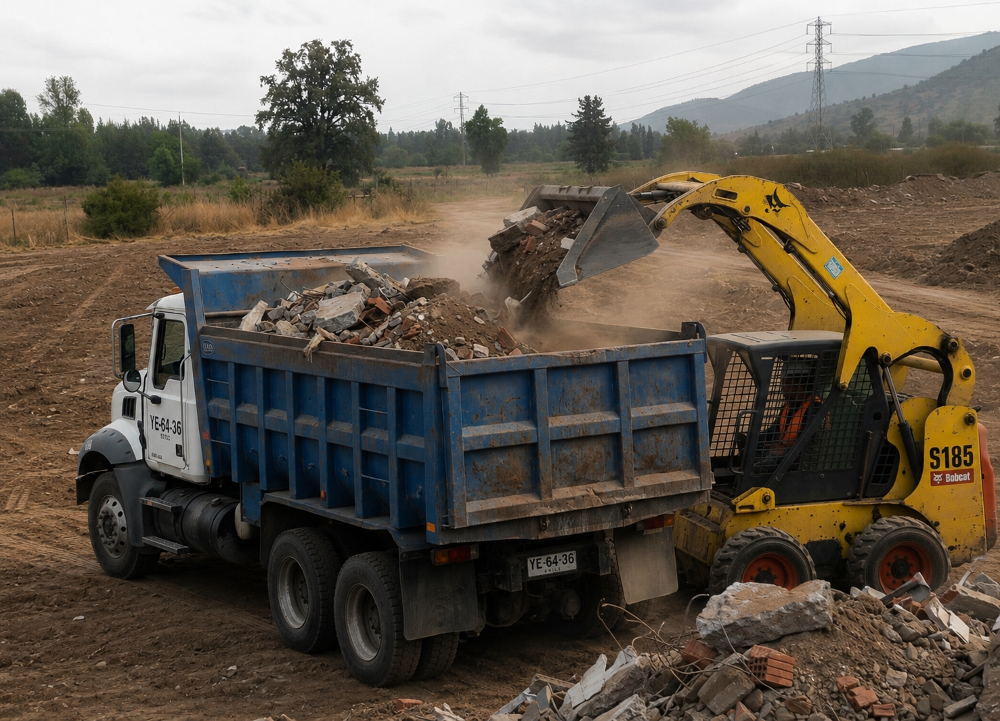
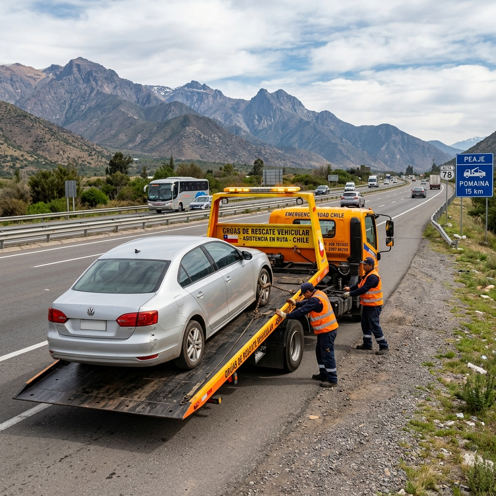
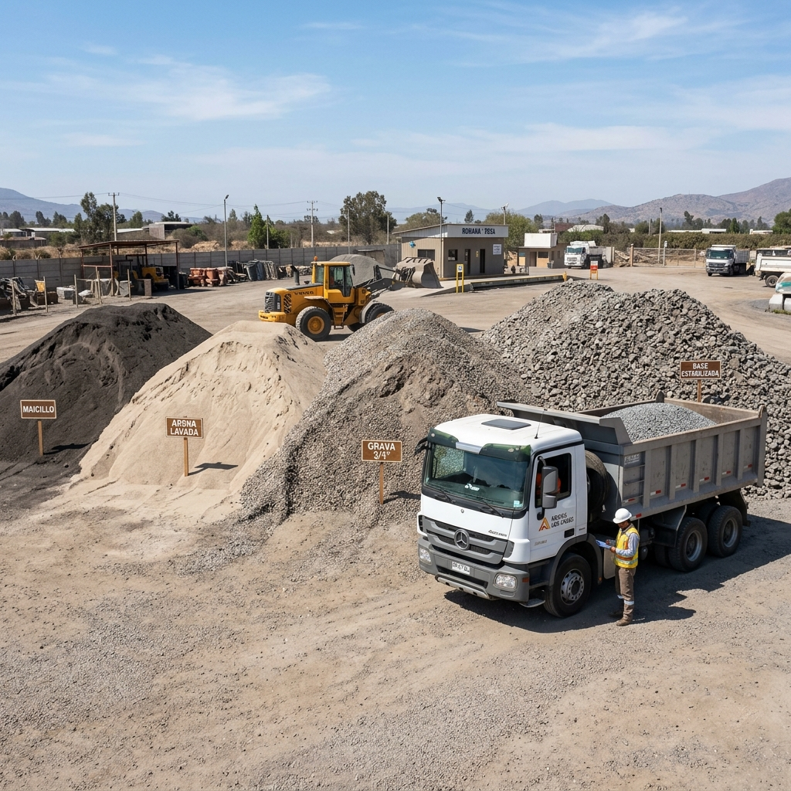
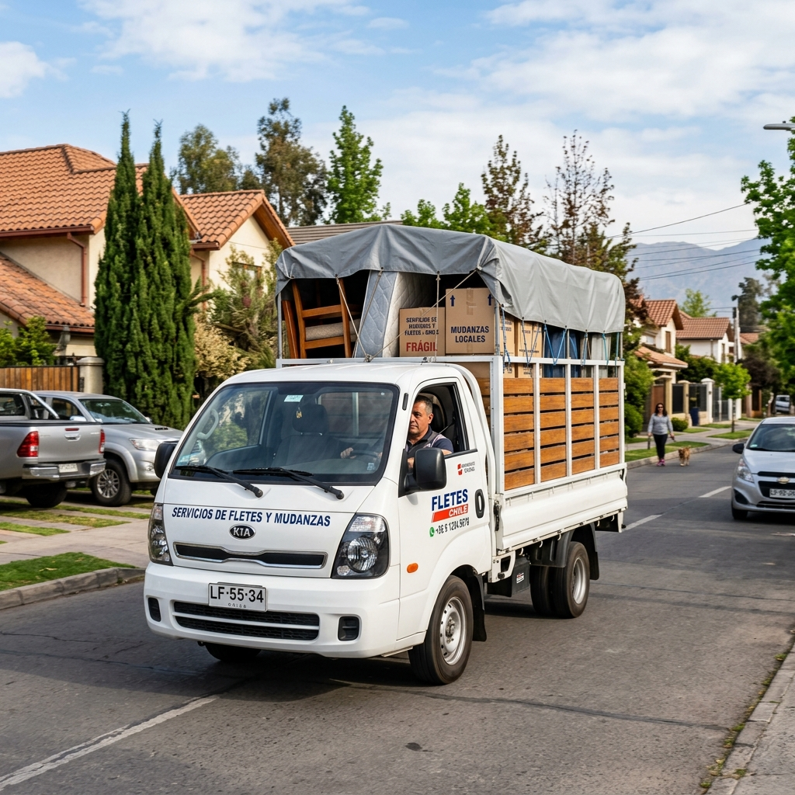
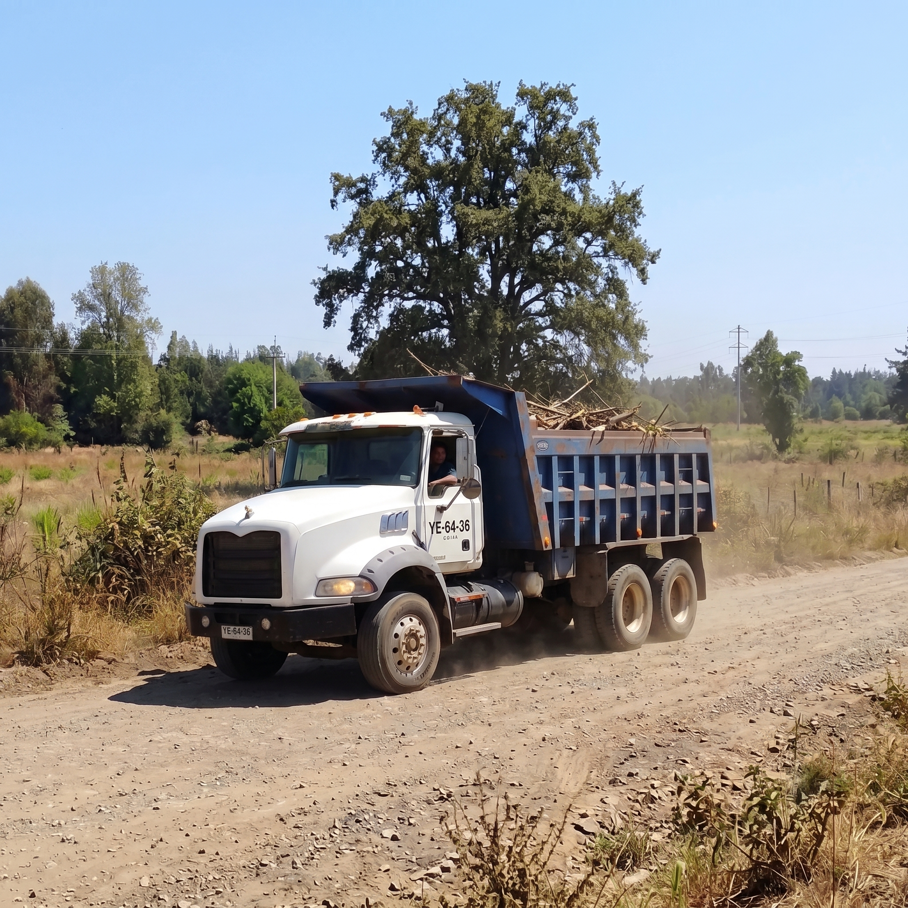
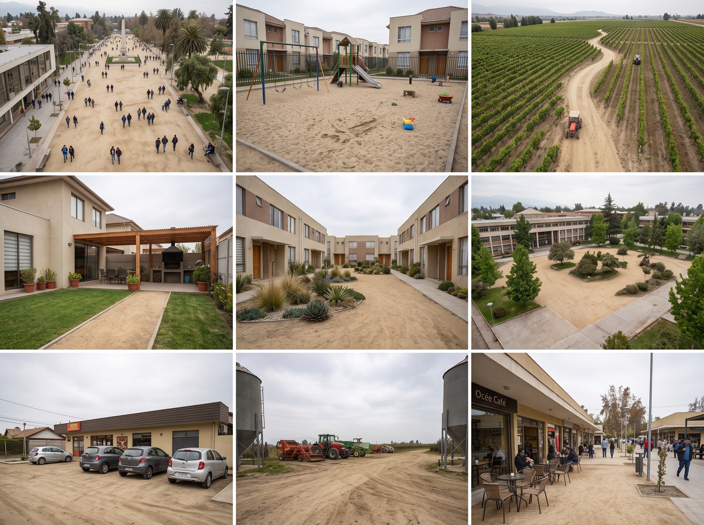

Nuestros 6 Servicios Principales
Flota propia de camiones, maquinarias pesadas y equipos de auxilio para obras, parcelas, empresas y particulares en toda la V Región de Valparaíso.

🧹 1. Retiro & LimpiezaRetiro y Traslado de Escombros
Servicio integral y rápido para retirar escombros de construcción, demoliciones, excedentes de tierra y restos de faenas en parcelas, viviendas y obras en toda la V Región de Valparaíso.

🚨 2. Auxilio Vehicular 24/7Grúas para Remolque de Autos
Rescate y remolque seguro para automóviles particulares, SUVs y camionetas ante fallas mecánicas, pannes en ruta o siniestros en todas las comunas y carreteras de la Región de Valparaíso.

⭐ Servicio Muy SolicitadoVenta y Despacho de Áridos en la V Región de Valparaíso
Despachamos directamente a tu obra o parcela áridos en general y maicillo seleccionado en cualquier comuna de la V Región. ¡Consúltanos por metros cúbicos o camión completo!
Movimientos de Tierra
Excavaciones, nivelaciones de terreno, limpia de parcelas y apertura de zanjas con Retroexcavadora y Mini Cargador en la V Región.

5. Fletes RápidoCamión 3/4 para Fletes y Traslados Regionales
Camión 3/4 ágil y económico para fletes express, traslados medianos, mudanzas pequeñas y envío de materiales entre comunas de la V Región.

6. Gran VolumenTolvas de 16 m³
Camiones tolva de 16 cubos (16 m³) de alta capacidad para movimientos masivos de tierra, escombros o flete masivo de áridos.
Cotiza y Pide tus Áridos & Maicillo con Despacho Inmediato
Suministramos áridos en general y maicillo seleccionado para construcción, nivelación de patios, estacionamientos y jardines. Despachados en camión directamente a tu domicilio u obra en cualquier comuna de la Región de Valparaíso.

Venta y Despacho de Maicillo Seleccionado
El maicillo es la opción favorita de dueños de parcelas, paisajistas y constructores en toda la V Región. Su tonalidad dorada y textura uniforme aportan elegancia, limpieza y firmeza a cualquier espacio al aire libre.
1 Usos Principales del Maicillo:
2 Beneficios Clave:
Retiro y Traslado de Escombros y Materiales
Nos encargamos de retirar escombros domiciliarios, restos de construcción, demoliciones y sobrantes de tierra en toda la V Región. Dejamos tu terreno, obra o vivienda completamente limpia y despejada.
Carga Manual o Mecanizada
Carga con ayudantes peonetas o minicargador.
Camión Incluido
Transporte rápido en camiones según volumen.
Servicio de Grúa para Remolque de Autos
¿Quedaste en panne o sufriste una falla técnica en la ruta? Contamos con grúa camilla de plataforma plana para remolcar tu automóvil o camioneta de forma segura hacia tu taller de confianza o domicilio en cualquier comuna de la V Región.
Camilla Plana Segura
Carga sin fricción ni daño a la transmisión.
Atención Inmediata
Respuesta rápida en rutas y zonas urbanas.
Movimientos de Tierra con Retroexcavadora y Mini Cargador
Realizamos la preparación integral de tu sitio u obra en cualquier comuna de la V Región. Contamos con operadores de vasta experiencia para ejecutar trabajos limpios, precisos y rápidos.
- ✓ Nivelación y emparejamiento de parcelas y terrenos
- ✓ Excavaciones para piscinas, cimientos y fosas
- ✓ Limpieza de matorrales y despeje de vegetación
- ✓ Trabajo en espacios reducidos con Mini Cargador
Camión 3/4 para Fletes y Traslados Menores
El vehículo perfecto para fletes de menor volumen, muebles, compras de materiales de construcción en tiendas de retail y mudanzas en toda la V Región de Valparaíso. Respuesta y despacho rápido.
Cotizar Flete 3/4 por WhatsAppCamiones Tolva de 16 Metros Cúbicos
Para proyectos de mayor envergadura o grandes cantidades de carga. Ideal para contratos de movimiento de tierra, traslado masivo de excedentes y fletes de gran cubaje (16m³).
Cotizar Tolva de 16m³ por WhatsAppCobertura en Toda la V Región de Valparaíso
Servicio de fletes, mudanzas, retiro de escombros, maquinaria pesada y venta de áridos con atención rápida y despacho directo a todas las comunas y provincias de la Región de Valparaíso.
Gran Valparaíso & Costa
Zona Costera Principal
Provincia de Marga Marga
Zona Interior Marga Marga
Provincia de Quillota
Valle Agrícola & Industrial
Provincia de San Antonio
Litoral Central Sur
Valle del Aconcagua
San Felipe & Los Andes
Litoral Norte & Petorca
Zona Norte de la V Región
¿Necesitas cotizar para tu comuna?
Escríbenos por WhatsApp indicándonos tu comuna, el tipo de servicio (flete, retiro de escombros, maicillo, grúa o maquinaria) y te enviaremos una cotización transparente al instante.